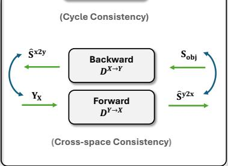

先说结论。对象/部件/关节结构是通用视觉表征的重要组成，尤其适合补充 slot/OCL 与 3D 表征线索。 弱化对 dense labels、CAD templates 和多帧输入的依赖，直接从单个 3D observation 学 category-level articulated structure。
Figureure 1 · Our model maps articulated objects under arbitrary poses to global posFigure 1. Our model maps articulated objects under arbitrary poses to global poses, canonical shapes, part segmentation and joint parameters in a self-supervised framework.这张图概括 SCAPO 的整体方法流程。阅读时先看模块之间传递的训练信号，再看作者如何把目标拆成可优化的子问题。

Figureure 2 · Our SCAPO frameworkFigure 2. Our SCAPO framework. Stage 1 canonicalizes the input point cloud X using the global pose $\{ \mathbf { R } _ { g } , \mathbf { t } _ { g } \}$ predicted by a SE(3)- equivariant auto-encoder $( \Theta _ { E }$ and $\Theta _ { D } )$ . In Stage $2 , \Theta _ { J }$ takes as input the globally aligned shape $\mathbf { S _ { \mathrm { o b j } } }$ and the learnable canonical template $\mathbf { Y } _ { X }$ to estimate joint parameters and derive bone transformations. The affine-invariant features $\mathbf { Z } _ { x }$ are fed to $\Theta _ { K }$ and $\Theta _ { \Delta }$ to learn keypoints K and shape variance $\Delta S _ { x }$ . With the skinning weights W and bone transformations D, our blend skinning module reconstructs coherent articulated shapes across poses.这张图概括 SCAPO 的整体方法流程。阅读时先看模块之间传递的训练信号，再看作者如何把目标拆成可优化的子问题。